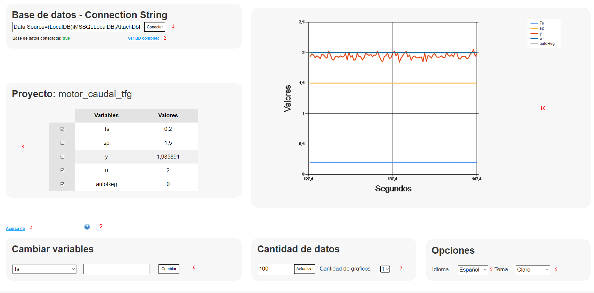

Ayuda página principal

- Connection String para la conexión con la base de datos.
- Enlace para ver todas las tablas del proyecto de la base de datos.
- Variables del proyecto en tiempo real. Los controles permiten indicar cuales se mostrarán en el gráfico de la derecha (10).
- Enlace para ver la información "Acerca de".
- Botón para mostrar la página de ayuda.
- Campo para el cambio de variables. En el desplegable se seleccionará la variable a editar y en el campo de la derecha el nuevo valor que va a tomar.
- Cantidad de datos a mostrar en los gráficos y número de gráficos a mostrar.
- Menú de cambio de idioma.
- Menú de cambio del tema visual.
- Apartado donde se muestra el gráfico principal con las variables marcadas en la tabla de la izquierda.
Inicio